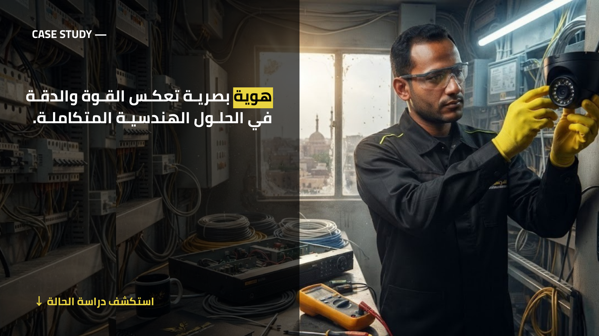
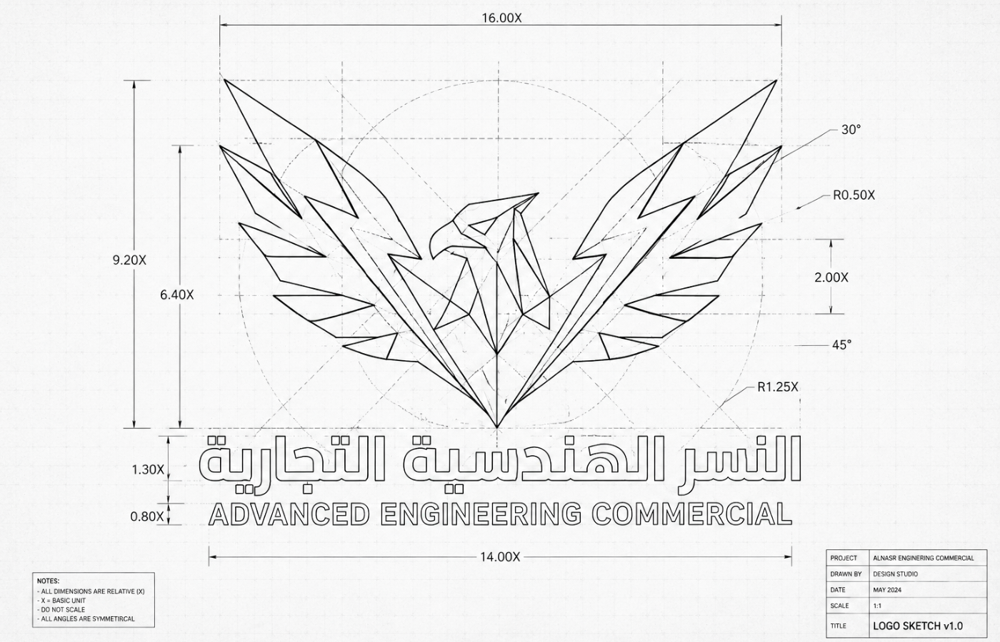
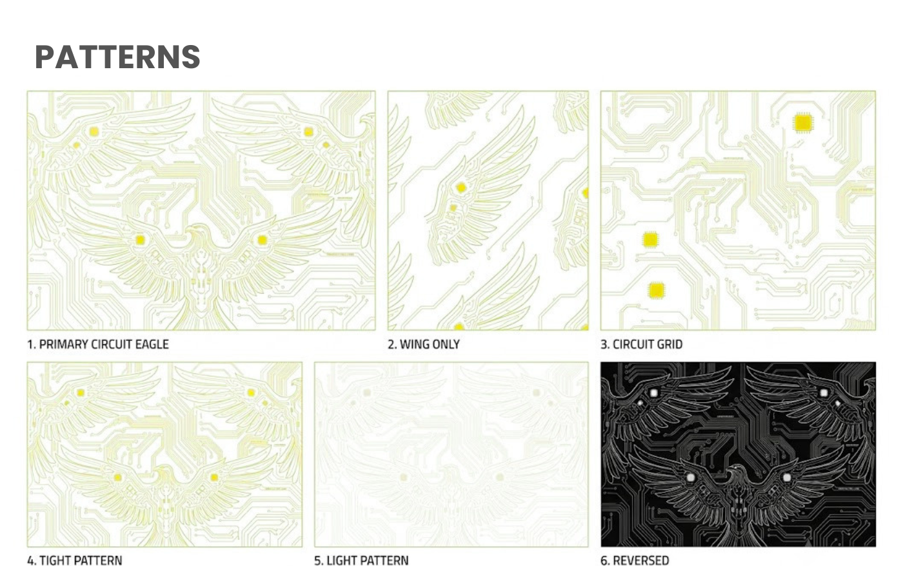
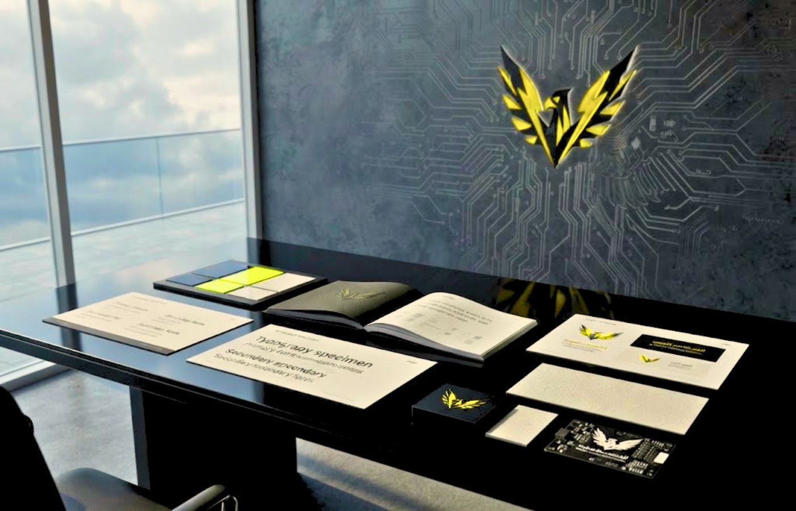
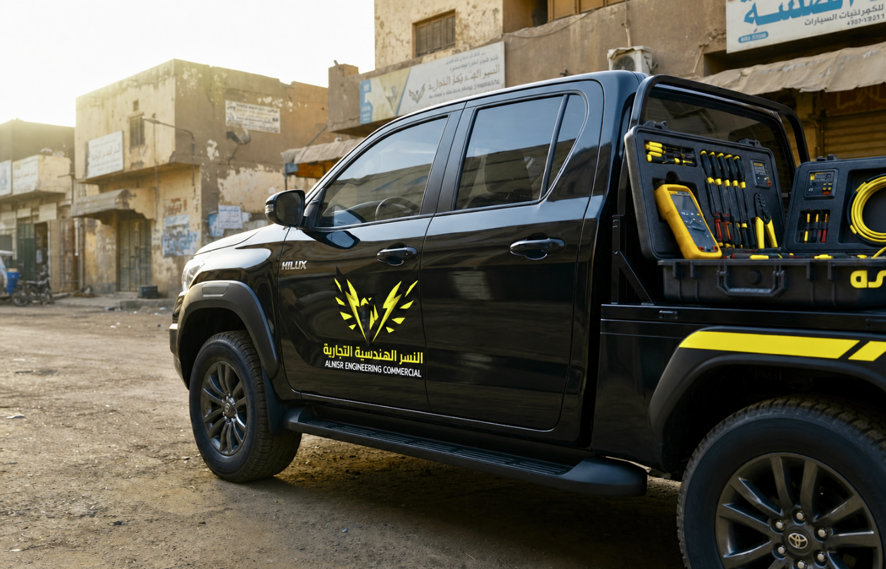
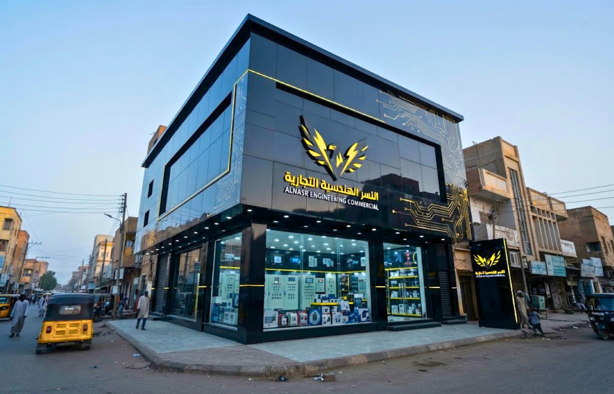
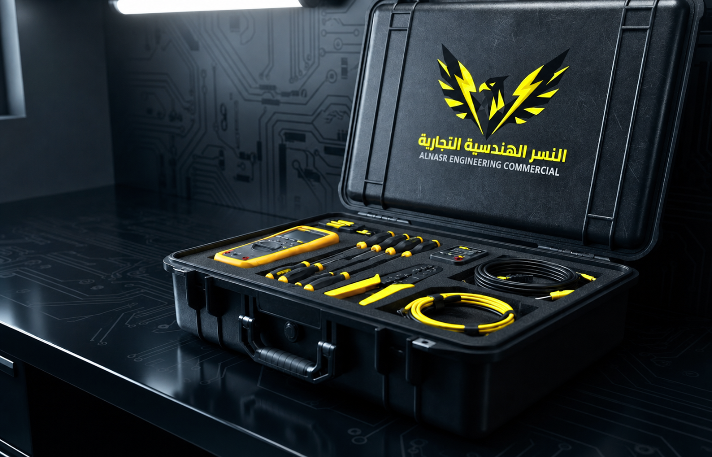
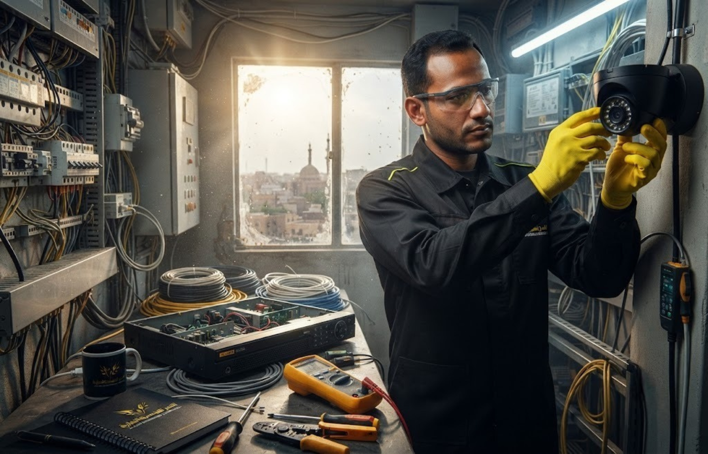
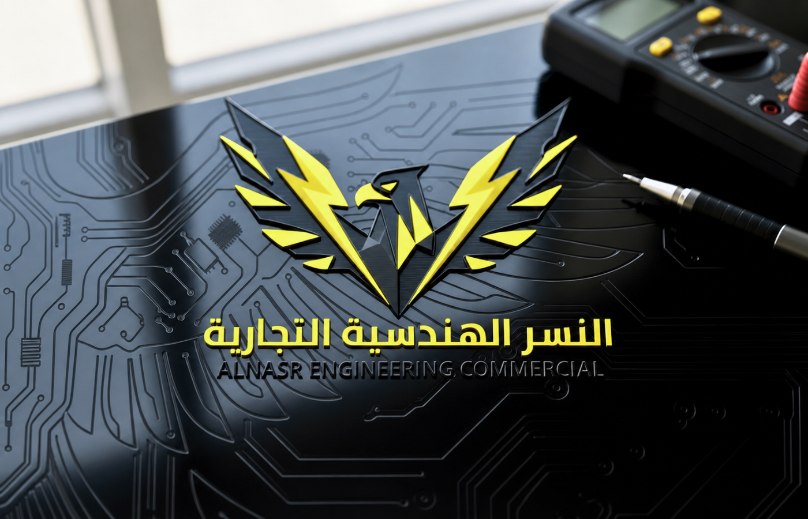
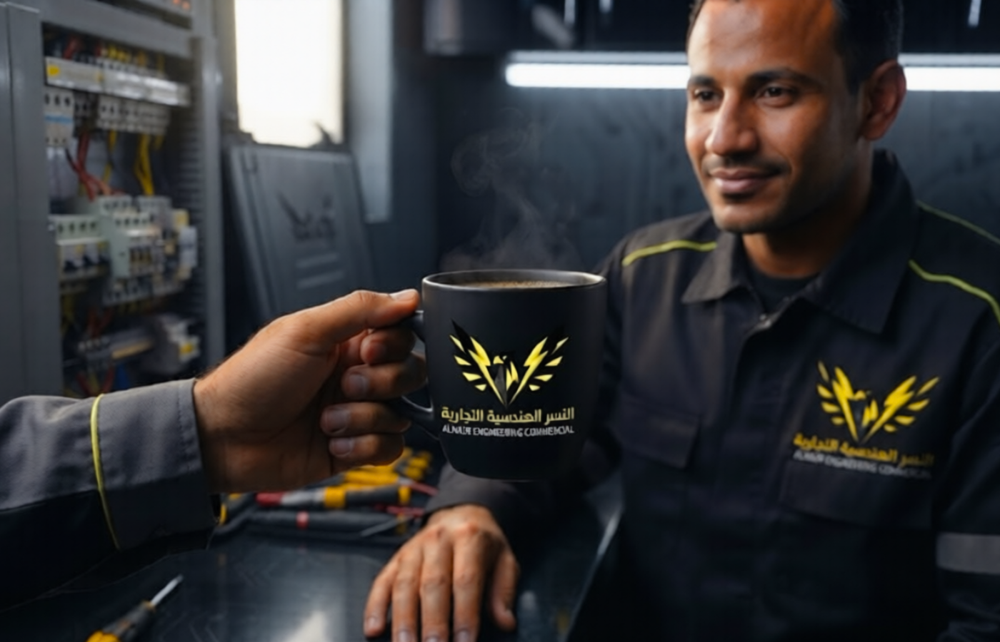

النسر الهندسية التجارية شركة سودانية متخصصة في الحلول الكهربائية، أنظمة الحماية والكاميرات والأعمال الهندسية. كان الهدف بناء هوية بصرية تعكس القوة، الدقة والثقة التي تقدمها الشركة.
احتاجت العلامة إلى حضور بصري أكثر احترافية يظهر مستوى الخدمات ويزيد ثقة العملاء.

تم بناء الشعار حول مفهوم القوة والرؤية، مع لغة هندسية تعكس طبيعة الشركة.

الأسود يعكس القوة والاحتراف.
الأصفر يعبر عن الطاقة والحركة.
الأبيض يمنح الوضوح والتوازن.



تم بناء نظام بصري موحد لضمان ظهور العلامة بشكل متناسق في جميع نقاط التواصل.









هناك فريق يصنع الحل.